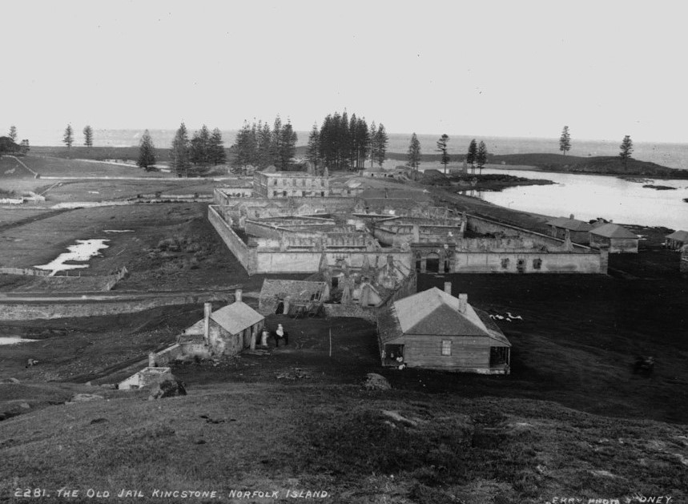

History
Early Polynesian presence
Europeans were not the first people to inhabit Norfolk Island. Stone tools have been found at both Emily and Slaughter bays within KAVHA. Archaeological investigations have revealed evidence of landscape modifications in the Emily Bay area including artefact assemblages and structural remains that have been interpreted as a rudimentary marae, a religious structure characteristic of East Polynesian culture. Radiocarbon dating indicates Polynesian settlement of the area occurred between AD 1200 and AD 1600.
The first European settlement
Discovered by Captain James Cook RN in 1774, Norfolk Island was settled on 6 March 1788. Cook reported the island had rich soils, tall pines suitable for ships masts and spars, and native flax that could be used for making canvas. Governor Philip had instructions to settle and secure the island as soon as possible to secure its potential naval supplies.
Arriving on the Supply, Lieutenant Philip Gidley King RN and a party of nine male and six female convicts and seven staff established a settlement named Kingston. Crops were sown in the adjoining valley, Arthurs Vale, and, unlike the experience in Sydney, the Kingston crops flourished. To relieve the food pressures in the infant colony of New South Wales, Governor Philip relocated around one-third Sydney's population to Kingston.
Extensive clearing followed and both convicts and free settlers farmed small holdings of land. The rising land behind Kingston was cleared for surveillance and to ensure there was no cover for escaping convicts. The first settlement's population peaked at 1156 in May 1792. By 1804 the free settlers on the island significantly outnumbered the convicts who represented 23 percent of the total population of 1084. On its abandonment in 1814 the settlement's buildings were destroyed.
The second settlement
In response to the report by Commissioner Bigge (1822-23) on the effectiveness of transportation, the Colonial Secretary Lord Bathurst instructed Governor Brisbane in 1824 to re-occupy the island as a 'great hulk or penitentiary' to provide secondary punishment. Secondary punishment was designed to revive the fear of transportation and deter crime in Britain and the colonies, and was a sentence applied to transported convicts who re-offended in the colony.
Norfolk Island was re-occupied on 6 June 1825 by Captain Turton as commandant, with a party of 50 soldiers, 57 convicts, six women and six children. The settlement was again located around Kingston and the remains of some first settlement buildings were rebuilt, old agricultural areas rehabilitated and new areas cleared. But it was to be of an entirely different character to the first settlement.
The second settlement on Norfolk Island was designed to be the extreme in convict degradation and the came to stand for worst of the transportation system.

Third settlement
As the Pitcairn Island descendents of the Bounty mutineers had outgrown their island home, the British government chose to resettle them on Norfolk Island. The whole Pitcairn community landed at Kingston Pier on 8 June 1856.

Their descendents, who today comprise nearly a third of Norfolk Island's population, still speak the Pitcairn language. For them KAVHA is a place of special significance because it has been continually and actively used since their arrival as a place of residence, work, worship and recreation. KAVHA is uncommon as a place where a distinctive Polynesian/European community has lived and practised their cultural traditions for over 150 years.
KAVHA's major buildings include:
- The 1829 Government House, one of the earliest and most intact remaining government house buildings in Australia, with its commanding views of the settlement
- The Old Military Barracks and officers quarters constructed between 1829-1834 which are surrounded by high walls giving it an appearance of a military fortress
- The New Military Barracks, commenced in 1836 which follows a similar fortress-like design
- The Commissariat Store, dating from 1835 which is the finest remaining colonial (pre 1850) military commissariat store in Australia
- The elegant Quality Row houses that provided quarters for military and civil officers. To optimise surveillance, the military complexes are elevated in order to oversight the convict precinct located closer to the water and at a lower elevation.
Also to be found at KAVHA are the archaeological remains of the two convict gaols, and the perimeter walls and archaeological remains of the prisoners' barracks (1828-48) with the Protestant chapel. These show the development of penal philosophies during the period of the settlements operation, with the original gaol built for barrack accommodation while the remains of the new prison and its perimeter walls (1836-40, 1845-57) provides a rare representation of a radial design.
Other archaeological remains include the blacksmith's shop (1846), lumber yard, water mill, the crankmill (1827-38), the remains of the only known human powered crankmill built in Australia before 1850, the salt house (1847), the windmill base (1842-43), lime kilns; the landing pier (1839-47) and sea wall, two of the earliest remaining large scale engineering works in Australia. The role of religion in reform is evident in the Protestant and Catholic clergyman's quarters.

Hell on earth
Convicts worked from sunrise to sunset. Agricultural work was done with hoes and spades, and no ploughs or working cattle were used. Convict accommodation was cramped and unsanitary and this, combined with their poor diet of one meal every 48 hours, resulted in poor health and many deaths. The harshness and degradation of the treatment metered out to the convicts was intended to break them. Floggings were common, even for trivial offences, and sentences could be extended.
The worst of the convict population from both New South Wales and Van Diemen's Land were sent to Norfolk Island; men who had become so brutalised by the system that ever increasing levels of punishment only served to make them more recalcitrant. The prospect of punishment by death was no deterrent.
The ruthless men charged with running Norfolk Island and controlling its convict population were themselves part of a brutal system.
A number of the commandants, including Captain James Morisset, Major Joseph Childs and John Price, were particularly cruel. Mutinies and uprisings were not uncommon and invariably led to floggings and hangings. It was during Morisset's period as commandant (1829-34), which was noted for his extensive use of the lash, that Norfolk Island became renowned as 'hell on earth' and by 1833 the island's fearsome reputation was well known in Britain.
A new prison philosophy
Only one commandant of Norfolk Island, Alexander Maconochie, brought a humanising regime of reform to the second settlement period through four of its 30 years. He introduced the Merits System of Penal Discipline, which worked on the principle that the prisoner could secure freedom if they were industrious and well behaved. For a number of reasons, including the fact that his superiors disapproved of his reformist actions, his reforms failed. Under Maconochie's humanitarian influence the conditions for prisoners had improved. They rapidly deteriorated, however, under the next commandant, Major Joseph Childs.
The final years
The latter stages of the second settlement saw prisoners arriving direct from Britain to serve the first stage of their punishment under the new probation system introduced in 1843. The severity of the place continued and in his report to the British Parliament in 1847, Catholic Bishop Robert Wilson detailed the appalling conditions on Norfolk Island. His report helped bring an end to the island's use as a penal settlement. It was gradually closed between 1847 and 1855 with some convicts having been released on tickets of leave, while others were taken to Port Arthur where they served out their sentences. An Order in Council made on 29 December 1853, repealed all previous orders making Norfolk Island a penal settlement. A small party remained on the island to care for the farms and livestock and to handover to the incoming settlers from Pitcairn Island, who constituted the third settlement phase of the island's history.